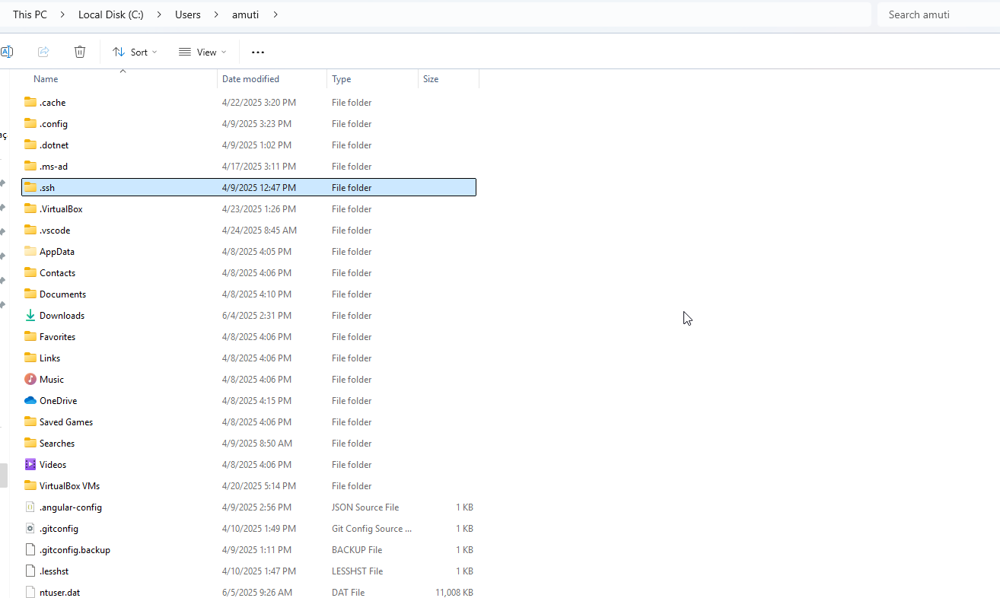
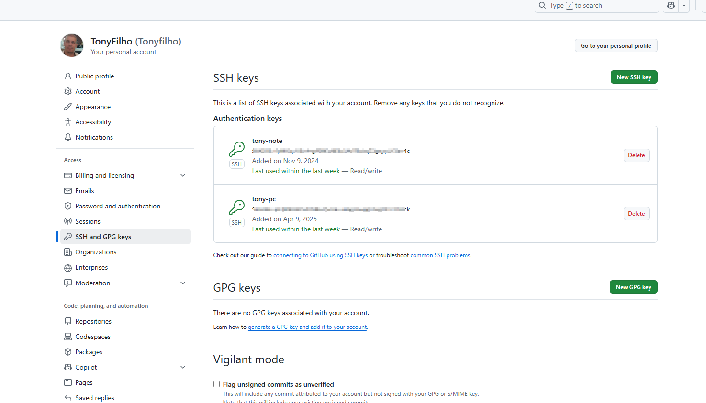

Getting Started with Angular
Congratulations on starting your Angular journey! Angular is a powerful platform for building web applications. This application demonstrates the core features of Angular with a responsive design.
1. Install Git
Before version controlling your Angular project, you need to install Git:
For Windows 11:
- Download from git-scm.com
- Run the installer with default options
For Linux (Ubuntu/Debian):
sudo apt update
sudo apt install git
Verify installation in terminal:
git --version
2. Configure Git
Set up your global Git configuration:
git config --global user.name "Your Name"
{{"git config --global user.email your@email.com"}}
3. Generate SSH Keys

Create secure authentication keys for GitHub:
For both Windows and Linux:
{{'ssh-keygen -t ed25519 -C "your@email.com"'}}
eval "$(ssh-agent -s)"
ssh-add ~/.ssh/id_ed25519
For RSA (alternative):
{{"ssh-keygen -t rsa -b 4096 -C your@email.com"}}
4. Configure SSH in GitHub

Add your SSH key to GitHub:
Copy your public key:
# Windows
cat ~/.ssh/id_ed25519.pub | clip
# Linux
xclip -sel clip < ~/.ssh/id_ed25519.pub
- Go to GitHub > Settings > SSH and GPG keys
- Click "New SSH key"
- Paste your key and save
Test your connection:
{{"ssh -T git@github.com"}}